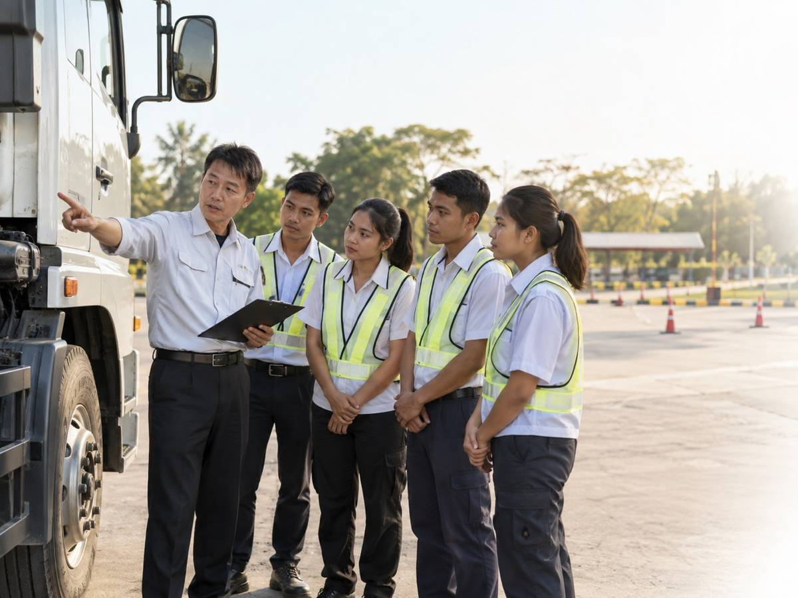

外免切替
一発合格率
ミャンマーでの事前教育と日本での学科・実技指導を実施。
TRANSPORT INDUSTRY × MYANMAR
トータルサポート
導入企業様は、その後すべて追加採用に至っています
貴社の立場に合わせてご覧ください
Results
私たちはこれまで、複数の運送業者様に外国人ドライバーの育成・受入れをご支援してきました。
ご導入いただいた企業様からは、いずれも「もっと採用したい」という声をいただき、
追加採用（リピートオーダー）につながっています。
ミャンマーでの事前教育と日本での学科・実技指導を実施。
送り出し後も日本語教育・母国語でのヒアリングを継続。
GMIから送り出した人材が日本の運送会社で実際に勤務。
現場で見つかった課題を、次の人材育成へ反映しています。
一度ご導入いただいた企業様からは、その後も継続して追加採用のご依頼をいただいています。
これは、単なる人材紹介では終わらない「現地教育×外免切替×定着支援」の一貫体制が、
現場での即戦力化と定着率向上という結果を出している証です。

About us
GMIは、ミャンマー政府公認の送り出し機関として、外国人ドライバーの育成から日本への送り出しまで行っています。一般的な日本語教育だけではなく、運送業に必要な日本語教育、交通教育、実技指導を実施。さらに日本入国後の免許切替、試験対策・同行、企業への配属後の日本語教育・定着まで継続して支援しています。
すでにGMIから送り出した人材が、日本国内で長距離・短距離ドライバーとして活躍。一度ご導入いただいた企業様からは、その後も継続して追加採用のご依頼をいただいています。
Situation
ドライバー不足が深刻になる中、外国人ドライバーの採用が新たな選択肢として注目されています。
就労を目的とした在留資格「特定技能」が創設され、人材不足の解消に向けて採用を検討する企業が増えています。
しかし、多くの企業様が
「日本の交通ルールを守り、安全に運転できるのか？」
「配送先でコミュニケーションが取れるのか？」
このような不安を抱えているのが現状です。さらに、外国人ドライバーの受け入れは業界全体としてまだ始まったばかりで、現地教育から日本での定着支援までを一貫して手がけ、実績を積んできた事業者はほとんど存在しません。
Problem
交通ルールや学科試験、
配送業務に必要な日本語を
理解できるのか。
日本の道路環境や、
大型車に対応できる技術を
身につけられるのか。
合格率はわずか26%。
短期合格できるのか。
免許取得・配属後も、
安心して長く働き続けて
もらえるのか。
現地教育から日本での定着支援まで一貫して手がけ、
実績を積んできた事業者は、業界全体としてほとんど存在しません。
Concerns
外免切替（外国免許から日本免許への切替）の手続きが複雑で手間がかかる。現場社員の同行負担が重い。
日本の交通ルールや特有の商習慣を十分に理解できるか。安全運転を担保できるか。
配達先や積み込み現場での指示・対応が日本語でスムーズにできるか。専門用語が通じるか。
慣れない環境で悩みや不安を抱え、早期離職してしまわないか。本音が聞き取りにくい。
Support Flow
ミャンマーと日本を「信頼」で結ぶ、業界唯一のワンストップサポート
外国人ドライバー採用はまだ黎明期。だからこそ、「現地教習」「現地日本語教育」「日本での外免切替」「定着支援」までを
一社で一貫して実績化している事業者は、私たちが把握する限り存在しません。
私たちは、この一貫体制を実際に運用し、複数企業様への導入・追加採用という結果で実証してきました。
ドライバー特化型実践教育
独自の運転教習所による運転教習／大型バス会社と提携した大型車両特化プログラム／ドライバー業務に特化した独自の日本語カリキュラム
外免切替委託サポート
研修所での集中訓練と煩雑な試験手続き代行
週1回の無料日本語学習
現場での課題に合わせた継続的な語学支援
母国語ヒアリング&フィードバック
2週に1回「元先生」が面談／企業様へのフィードバック
Training
入国前から「日本のプロドライバー」としての基礎を構築
ミャンマー現地で、日本の交通ルールと安全意識を前提とした運転教習を実施。
現地の大型バス会社と提携した、ハイレベルな大型運転教習を実施。単に「運転できる」レベルではなく、「日本の現場で即戦力となる」レベルまで技術を引き上げます。
運転技術や安全意識を入国前に見極めることで、採用ミスマッチを防止。
※提携先の大型バス会社は、日本のJICA（国際協力機構）から技術指導を受け、日本基準の教育プログラムを確立しています。
現地にいながら安全意識と技能を習得できるのは「日本品質」のためです。
Language Education
私たちは、これまで2社の運送業者様と共に、外国人ドライバー受入れの現場で試行錯誤を重ねてきました。
運送会社様のご協力をいただき、入国後3か月間の日本語教師による日本語研修で培ったノウハウを蓄積。
現在はミャンマー現地での「入国前学習体制」へと進化させ、外免切替のボトルネックも一つひとつ特定・解消してきました。
その結果として、ご導入いただいた企業様からは、いずれも追加採用のご依頼をいただいています。
これは「現場で本当に機能するか」を実践の中で証明してきた、当社ならではの実績です。
JLPT（N4・N3）合格を目的とした一般的な学習ではなく、現場で必要な用語やコミュニケーションに特化した独自カリキュラム。
ミャンマーでの入国前学習で基礎を作り、入国後ブラッシュアップ。
Weekly Support
「採用して終わり」にしない。現場配属後も、業界では稀な「伴走型」日本語サポートを無償で提供し続けます。
Mentoring
ヒアリングを担当するのは、彼らが現地で日本語を教わった「元・先生」です。
学生時代の性格や弱点まで把握している「良き理解者」だからこそ、見知らぬスタッフには話せない職場での悩みや私生活の不安、上司への要望を飾らない言葉で引き出せます。
ミャンマーでの教育、日本での免許取得、配属後のケア。すべてのフェーズで「知っている顔」が介在することで、外国人労働者特有の孤独感を解消し、高い定着率を実現します。
「知らない人」には言えない本音も、「先生」になら話せる。
ミャンマー時代の恩師による、日本での継続伴走サポート
Feedback
ヒアリング内容は精査し、採用企業様へ定期的にフィードバック。現場では見えない「心の予兆」を共有します。
日本人上司には言い出しにくい「本音」を把握。ミスマッチや不安を早期に解消し、トラブルを未然に防ぎます。
フィードバックをもとに、受入れ態勢やコミュニケーションの仕方を最適化することが可能です。
専属カウンセラーを雇っているような安心感を提供
Comparison
外国人ドライバーの活用は、業界全体としてまだ実績の少ない分野です。
現地教育から日本での定着支援までを一貫して手がけ、かつ導入企業様からの追加採用という結果で実証している事業者は、私たちが確認している限り他に存在しません。
| 比較項目 | 一般的な外国人材紹介・支援サービス | GMIの一貫プログラム |
|---|---|---|
| 現地での運転教習 | 対応なし・提携先任せ | 独自運転教習所＋大型車両特化プログラム |
| 現地での日本語教育 | 一般的なJLPT対策のみ | ドライバー業務特化の独自カリキュラム |
| 外免切替サポート | 手続き案内のみ、同行負担は企業側 | 研修所での訓練・試験手続きを完全代行 |
| 配属後の定着支援 | 配属後はフォローなし | 「元先生」による母国語ヒアリング（2週に1回） |
| 実績 | 業界自体が新しく前例が少ない | 導入企業様からの追加採用実績あり |
Value
| 当社のサポート体制（事実） | 期待される導入効果（メリット） |
|---|---|
| SUPPORT 外免切替手続き・書類作成・同行をすべて当社が代行・支援します。 | VALUE 現場の主力社員が手続きに忙殺されることなく、本来の運送業務に専念できます。 |
| EDUCATION ドライバー特化の日本語教育を、入国前から配属後まで一貫して提供します。 | VALUE 現場での指示理解がスムーズになり、配属直後のミスや混乱を最小限に抑えます。 |
| MENTORING ミャンマー時代の恩師が母国語で定期的なメンタルケアを実施します。 | VALUE 孤独による早期離職を防止し、外国人材の定着率向上と採用コストの最適化に寄与します。 |
| FEEDBACK ヒアリング内容は精査され、採用企業様へ定期的にレポートされます。 | VALUE 「本音」に基づく改善が可能になり、企業とドライバーの双方が長く働ける環境が整います。 |
※導入効果は個別の受入れ環境や候補者の資質等により変動する可能性があります。
外免切替・特化教育・定着支援を一貫したパッケージで。
外国人ドライバー活用が始まったばかりの今、現地教育から定着支援までを一貫して実績化している事業者はまだ多くありません。
ミャンマー現地の教習・教育から、日本での外免切替・定着支援までを完全パッケージ化。
ミャンマー現地と日本国内のネットワークを活かした強固な支援体制。
導入企業様から追加採用をいただいている、実績に基づく信頼性。
「言葉が通じる」だけでなく「心が通じる」環境づくりで、貴社の人材課題解決に貢献します。
Service
For Partners
GMIはミャンマー政府公認の送り出し機関として、外国人ドライバーの育成・送り出しに取り組んでいます。ミャンマーでの人材募集、日本語教育、運転教育から、日本での免許取得支援、配属後の継続教育まで対応。
外国人ドライバーの受け入れはまだ始まったばかりの分野であり、現地教育から日本での定着支援までを一貫して手がける送り出し機関は多くありません。GMIはこの一貫体制と実績をもって、登録支援機関・人材紹介会社の皆様のパートナーとなります。ご紹介先企業様からも追加採用のご依頼をいただいており、安心してご提案いただける実績があります。
Company
ミャンマーと日本を、人でつなぐ。
Contact
「外国人ドライバーを採用したい」「登録支援機関・人材紹介会社としてドライバー人材を探している」
「免許取得までどのように進めればよいか分からない」といった段階からご相談いただけます。